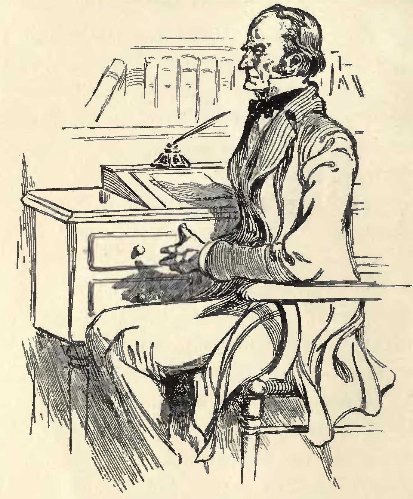
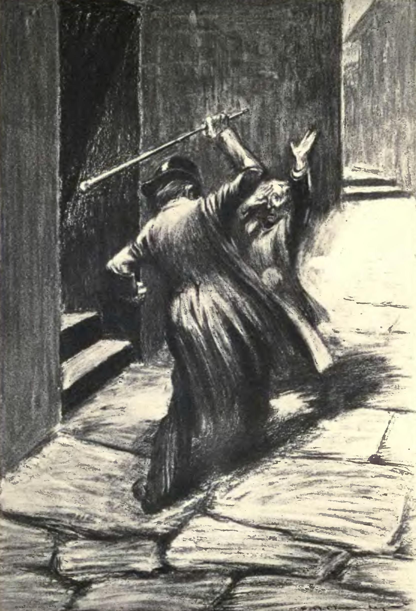
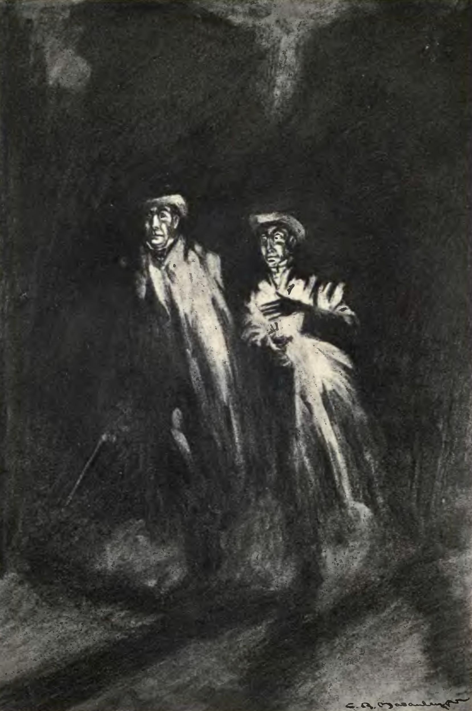
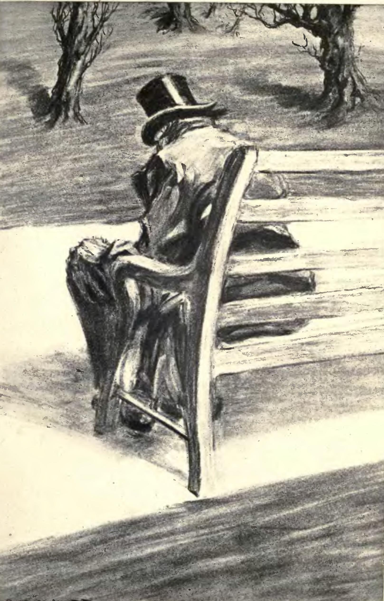

I. The Door
A blistered, blank-faced door on a side street in London. Richard Enfield, cousin to the solicitor Gabriel Utterson, passes it one night and cannot forget what he witnessed there.

Enfield tells Utterson what happened. A small, hunched figure walked straight into a little girl and kept walking — trampled her without breaking stride. Enfield dragged him back. The creature agreed coldly to pay compensation, vanished through that door, and returned with a cheque that cleared.
The man was Edward Hyde. Utterson knows the name: an old friend has made a will naming Hyde sole beneficiary of his entire estate. Hearing that this beneficiary tramples children, the trouble deepens into something colder.
"If he be Mr. Hyde, I shall be Mr. Seek."
— Utterson, to himselfUtterson calls on Henry Jekyll, who deflects his questions with polished calm. He can be rid of Hyde at any moment, Jekyll says. He simply chooses not to be. Hastie Lanyon, the third of their old triumvirate, has been estranged from Jekyll for years and will not help. Utterson sets to watching the door alone.
"Quiet minds cannot be perplexed or frightened but go on in fortune or misfortune at their own private pace, like a clock during a thunderstorm."
— the narrator, of UttersonUtterson's mind is not quiet. After ten days he catches Hyde at the door. The encounter lasts seconds. Hyde recoils. There is no single reason to name him ugly — but everyone who sees him feels revulsion at a level that precedes language.
The Respectable and the Hidden
The mystery begins not with violence but with architecture — a door on a side street used by one man only, attached invisibly to the house of another. Stevenson understands that what a society conceals is at least as revealing as what it displays.
II. The Murder
A maid watching from her window sees two men meet in the street below: an old man with an air of innocent dignity, and Edward Hyde. The old man speaks pleasantly. Then, without warning, Hyde attacks.
He clubs Sir Danvers Carew to death. The blows do not stop when the man falls. The maid faints. When police arrive the cane is found broken in two — a gift from Gabriel Utterson to Henry Jekyll. The weapon used to kill a Member of Parliament was given by the investigating solicitor to the man who created the murderer. The connections are not metaphorical. They are exact.

Hyde vanishes. Jekyll, when Utterson calls, looks pale and shaken. He burns Hyde's will, produces a letter from Hyde promising to disappear for ever, and seems himself again. He donates to charity, receives friends. For two months, it holds.
"You must suffer me to go my own dark way."
— Jekyll, to UttersonThen the door closes again. One afternoon, Utterson and Enfield see Jekyll at the laboratory window, half-smiling. They call up. He begins to reply — and his face changes. Not surprise: the look of a man who has just remembered something catastrophic. He shuts the window and is gone. Neither man speaks of it. Victorian professional men do not name what they cannot explain; their silence is a decision, not a failure. Hyde's first victim was a child. His last, a Member of Parliament. The violence escalates; the silence holds.
Hastie Lanyon now refuses to speak of Jekyll at all. His face hardens into revulsion and dread at the name. Within weeks he is dying, and will not say why. He sends Utterson a sealed letter: do not open it until Jekyll is dead or disappeared.
A Murder Weapon with the Donor's Name on It
The Carew murder reveals that Hyde has grown — more violent, more reckless, harder to contain. That the murder weapon was Utterson's own gift to Jekyll is not an accident: the story insists, quietly, that these men's lives are more entangled than any of them know, or wish to.
III. The Last Night
Poole, Jekyll's butler, arrives at Utterson's door trembling. He has served in that house for twenty years. He needs Utterson to come.

The servants have huddled in the kitchen, refusing to separate. For over a week, whatever is in the laboratory has not come out. It passes notes in a hand they almost recognise, sends urgent orders for chemicals, and rejects every delivery as wrong. Its voice through the door is not quite Jekyll's. The figure glimpsed through the glass had something wrong with its face.
Utterson and Poole take an axe to the door. When it gives, they smell chemicals, and something organic beneath. On the floor, drowned in Jekyll's clothes — far too large — Hyde lies dead. Smaller than Jekyll, wrong in proportion, wearing another man's life. A phial of prussic acid lies crushed in his hand. He chose this end rather than wait for the alternative.
No sign of Jekyll. On the dissecting table: a full statement addressed to Utterson, Lanyon's sealed letter, and a will rewritten in Utterson's favour — papers arranged with the care of a man who knew exactly what was coming and spent his last hours of lucidity preparing the record.
"It is one thing to mortify curiosity, another to conquer it."
— Stevenson, of UttersonThe Empty Room
The break-in answers one question by raising a larger one: Jekyll is not dead, and Hyde is not Jekyll — and yet they share a body, and only one remains. Poole's plain loyalty, his refusal to theorise, throws into relief the horror that theory alone cannot contain.
IV. The Confession
Henry Jekyll's confession begins with a theory: every person contains two selves — one shaped by duty, the other by appetite. Most people suppress the second. Jekyll wanted to separate them.

The first draught was agony. On the other side of it was Edward Hyde: smaller than Jekyll, younger, free of conscience and reputation. Jekyll indulged him. The pleasures Hyde pursued are kept vague in the confession — "undignified" is as far as it goes — but Hyde moved through London at night with money and no conscience, no fear of consequence. What lies between trampling a child and beating a Member of Parliament to death, the confession will not name. After each excursion, Jekyll drank the potion and returned.
"I learned to recognise the thorough and primitive duality of man; I saw that, of the two natures that contended in the field of my consciousness, even if I could rightly be said to be either, it was only because I was radically both."
— JekyllAfter the Carew murder, Jekyll swore off the experiment. He lasted two months. Then, on a bench in Regent's Park, he transformed without the potion. Hyde was becoming the default.
"I sat in the sun on a bench; the animal within me licking the chops of memory; the spiritual side a little drowsed, promising subsequent penitence, but not yet moved to begin."
— JekyllHe could still transform back — but the supply of the specific salt ran out; none of the new stock worked. In desperation he summoned Lanyon, had him collect the chemicals from the laboratory, then transformed back in front of him. Lanyon, a man of reason, watched Hyde become Jekyll. The shock destroyed something in him that his worldview could not repair. He died of it.
"If I am the chief of sinners, I am the chief of sufferers also."
— JekyllHyde grew — physically larger and stronger over time, while Jekyll weakened. The evil self, once released, does not stay contained. In the final days, each transformation back was harder. Jekyll wrote the confession knowing that when Hyde returned, he would not come back. The hand writing these words is Jekyll's. It will not be Jekyll who puts down the pen.
"There comes an end to all things; the most capacious measure is filled at last; and this brief condescension to evil finally destroyed the balance of my soul."
— JekyllThe Confession of a Divided Man
Jekyll never claims innocence — he was Hyde too, and Hyde was him. The tragedy is not that a good man was corrupted but that a man who believed himself good discovered what was always there, indulged it, and could not stop. Hyde was not created by science. He was released by it.
Why it matters
Published 1886 · 80 pages · still in print
Duality of the Self
- Hyde is not an intruder — he is the part of Jekyll that was always there
- The experiment releases what respectability had suppressed; it creates nothing new
- Goodness is not a default state but an ongoing act of suppression
- That suppression has costs — and Hyde is what those costs look like when the bill comes due
The Repressed and the Respectable
- Victorian professional life demanded absolute decorum — pleasure was permitted only in secret
- Hyde is the return of everything repressed, made flesh; his pleasures are never named in the confession
- The male fraternity of solicitors and physicians operates as a machine for maintaining silence
- Utterson burns Hyde's letter, averts his eyes, keeps Lanyon's envelope sealed — respectability enables the evil it pretends to prevent
Science Without Conscience
- Jekyll uses scientific language — experiment, hypothesis, controlled trial — to escape moral responsibility
- Hyde is framed as a finding, not a choice; the scientific frame is itself the rationalisation
- Lanyon, the strict rationalist, dies of what he witnesses — pure reason is no defence against what reason unleashes
- The novella anticipates debates about scientific ethics that became acute in the 20th century
Legacy and Influence
- Stevenson wrote two decades before Freud, yet id and superego map onto Hyde and Jekyll almost exactly
- "Jekyll and Hyde" entered everyday English, joining Frankenstein and Scrooge in the tiny company of fictional names become common words
- 125+ film adaptations — more than almost any other literary work
- A founding text of horror, science fiction, and the psychological thriller simultaneously
Fun Facts
- 3–6 days: The time Stevenson took to write the first draft, in a fever.
- Burned: His wife Fanny called it too much an adventure story — Stevenson destroyed the manuscript entirely and rewrote it as a moral allegory.
- No women speak: The novella has no significant female speaking characters — the trampled child and the maid witness exist at the periphery, a comment on the closed male world where this repression operates.
- 125+ film adaptations: The 1931 Fredric March version won him the Academy Award for Best Actor. It remains the definitive screen version for many readers.
- Into the dictionary: "Jekyll and Hyde" is one of very few fictional phrases to enter common language as a descriptor for dual-natured people.
Celebrated Passages
The most memorable lines from the novel, with context.
"If he be Mr. Hyde, I shall be Mr. Seek."
— Utterson, to himself, after hearing Enfield's account"Quiet minds cannot be perplexed or frightened but go on in fortune or misfortune at their own private pace, like a clock during a thunderstorm."
— the narrator, of Utterson"It is one thing to mortify curiosity, another to conquer it."
— Stevenson, of Utterson"You must suffer me to go my own dark way."
— Jekyll, to Utterson"I learned to recognise the thorough and primitive duality of man; I saw that, of the two natures that contended in the field of my consciousness, even if I could rightly be said to be either, it was only because I was radically both."
— Jekyll"If I am the chief of sinners, I am the chief of sufferers also."
— Jekyll"All human beings, as we meet them, are commingled out of good and evil: and Edward Hyde, alone, in the ranks of mankind, was pure evil."
— Jekyll"There comes an end to all things; the most capacious measure is filled at last; and this brief condescension to evil finally destroyed the balance of my soul."
— JekyllTest Your Understanding
Three questions on themes and ideas — not plot recall.
1. Jekyll argues that his experiment separated his two natures into distinct forms. What does the novel suggest this reveals about human identity?
2. Lanyon witnesses the transformation from Hyde back into Jekyll and dies shortly afterwards. What does his death represent in the context of the story?
3. Hyde grows physically larger and stronger over time while Jekyll weakens. What does this detail suggest about the relationship between suppression and the self?